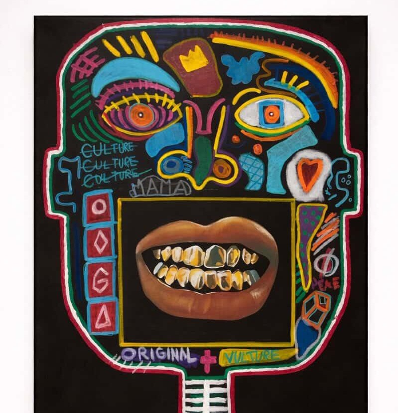

Œuvres récentes
Voir toutes les œuvresArtiste peintre
Une peinture figurative et brute, entre culture populaire et expressionnisme urbain — des personnages qui parlent fort, des couleurs qui ne s'excusent pas.
Découvrir les œuvres
Œuvres récentes
Voir toutes les œuvresDémarche
« Des personnages qui existent déjà — quelque part entre le cartoon, la rue et la peinture d'histoire. »
La peinture de Mahé Barbry convoque des figures hybrides, entre culture populaire et expressionnisme urbain. Les couleurs sont franches, les lignes sont épaisses, les sujets parlent fort. Chaque tableau est un rapport de force entre l'image et le regardeur.
En savoir plus sur la démarcheRenseignements
Pour toute demande
au sujet d'une œuvre